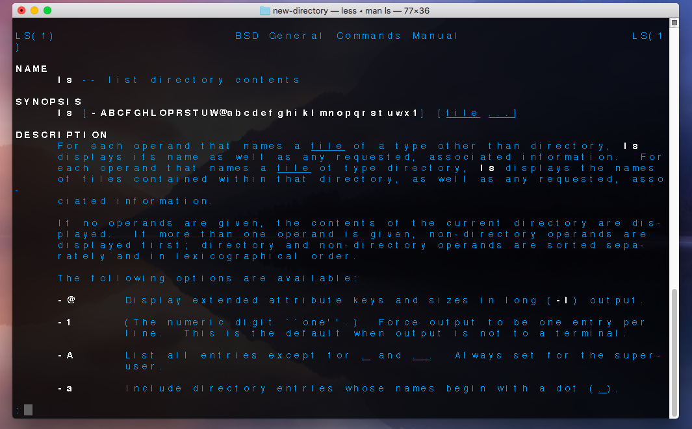

In order to list the files within a given directory, we use the command 'ls'.
To show the current directory, we use the command 'pwd' (print working directory).
To change the current directory, we use the command 'cd directory name'.
To create a new directory, we use the command 'mkdir directory name.
To create a new file, we use the command 'nano file name.file type OR 'touch file name.file type.
To remove a file, we use the command 'rm file name.
We can see that a new directory called 'new-directory' was created on the desktop, we then added a file called 'new-file.txt' to this directory and then removed the file.
If you need assistance with any commands - you can use the help function, using the 'man' or '--help' commands. For example if I wanted help with the 'ls' function I could enter 'ls --help' or 'man ls' and a guide to the function would be shown. An example of this is shown below:
